在本地电脑使用静态住宅代理可以隐藏用户的真实IP地址，从而提高隐私保护，避免个人信息被追踪和泄露。Socks5静态住宅代理可以帮助用户突破地区性的限制访问，访问部分受限网站和服务，例如在某些国家无法访问的社交媒体等。
有时候用户可能遇到一些地理位置偏远或网络特别拥挤的服务器，这会导致访问速度很慢。使用Socks5静态住宅代理可以帮助用户加速网络访问，尤其是一些视频、图片等需要大流量的网页，使用代理服务器缓存能够节省客户端到服务器之间的连接时间。
不良分子可能通过多种渠道获取用户IP地址，甚至进行网络攻击和入侵。使用静态住宅代理可以有效防范这些攻击行为，增强网络安全性。
总的来说，使用Socks5静态住宅代理可以增加网络匿名性，解除限制访问，加快网络访问速度，提高网络安全性等优势。
使用Socks5静态住宅代理IP优势
隐藏真实IP地址：当您连接到Socks5静态住宅代理服务器后，您的网络流量被路由通过另一个IP地址，从而隐藏了您的真实IP地址。这可以增加您的隐私和安全性，防止不法分子窃取您的个人信息或跟踪您的在线活动。
改善访问速度: 由于Socks5静态住宅代理服务器位于特定地区，所以选择一个离您所在地区较近的代理服务器能够改善您的访问速度并缩短响应时间。
允许访问限制网站: 如果您使用的是公共Wi-Fi网络，可能会遇到某些受限制的网站无法访问的问题。使用Socks5静态住宅代理可以允许您绕过此类限制，访问这些网站，同时保持匿名访问。
提供更好的安全性：Socks5静态住宅代理提供128位AES加密技术，一些其他协议只提供64位的加密技术，尤其是对于敏感数据及时进行传输加密十分有利。
本地浏览器使用Socks5静态住宅代理IP方法
设置Socks5静态住宅代理有以下情况及方法，你可以看看那种比较适合你！
方法一：本地国内网络情况下
在Google浏览器左上角点击-菜单-设置
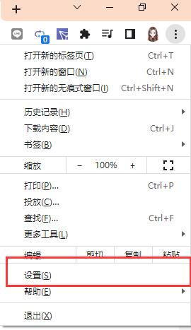点击"系统”-打开您计算机的代理设置
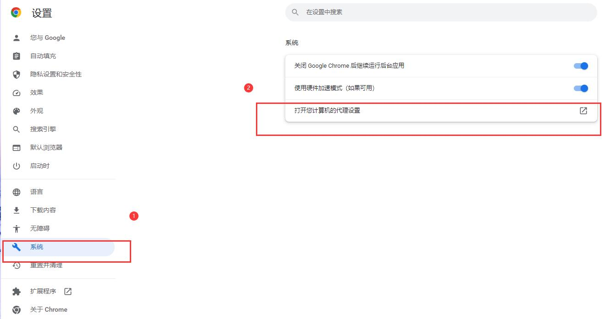在弹出窗设置代理IP地址和端口
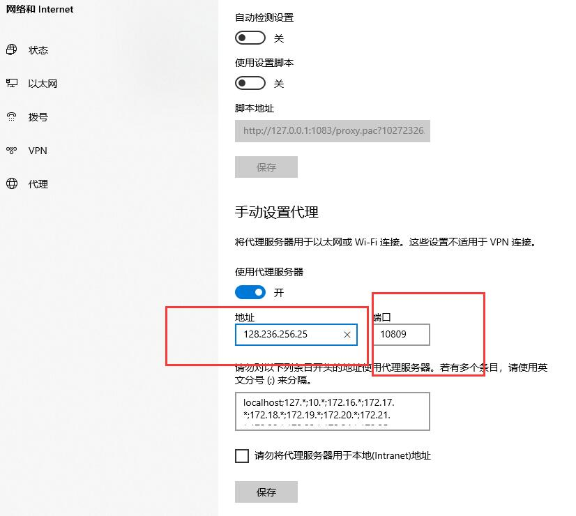在浏览器输入 地址，然后弹出窗口设置代理ip账号，代理ip密码
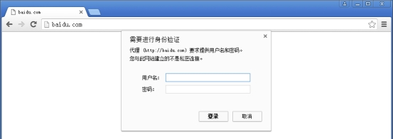
方法二：国外网络安装代理插件SwitchyOmega
在线安装
从 Chrome 应用商店安装，如果您无法从该链接安装，请使用下面的离线安装。
离线安装
①去 Github 下载 最新版安装包
②、下载安装文件后，在 Chrome 地址栏输入 chrome://extensions 打开扩展程序，拖动 .crx 后缀的 SwitchyOmega 安装文件到扩展程序中进行安装。（如果无法直接安装，请打开开发者模式，将 .crx 文件解压缩后添加）
一、升级Chrome到最新版本；
二、安装SwitchyOmega扩展程序；
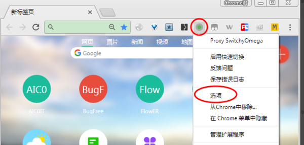
三、打开SwitchyOmega扩展程序选项设置，右键点击SwitchyOmega扩展程序图标，点击下拉菜单中的"选项"，就进入了SwitchyOmega扩展程序选项设置功能。
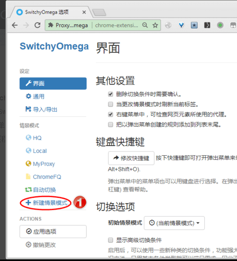
四、新增socks5代理情景模式，点击上图中"新建情景模式…"，在新建情景模式名称中输入socks5代理名称，选择"代理服务器"，点"创建"按钮。
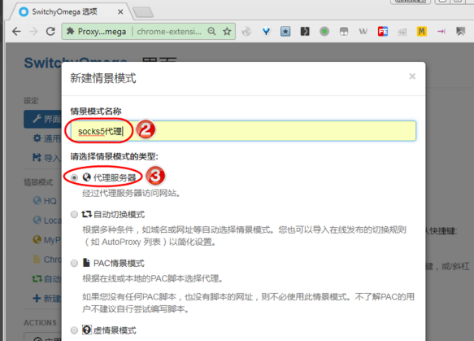
五、设置socks5代理情景模式，代理协议选择"socks5"，输入socks5代理服务器的地址和端口，点"应用选项"按钮，应用设置。
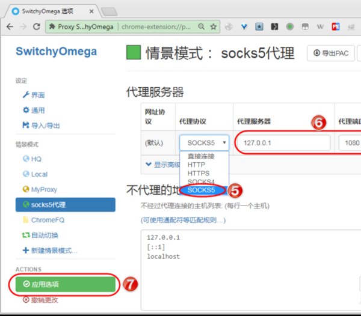
方法三：火狐浏览器上使用socks5代理IP
一、打开火狐浏览器，点击右上角菜单栏的“三”，然后点击“选项”；
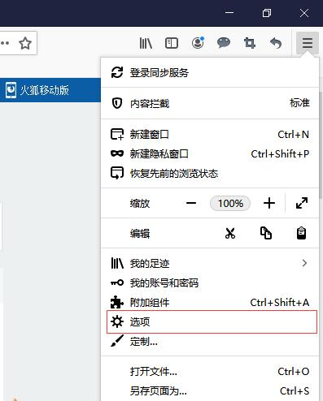
二、找到“网络设置”，点击“设置”；
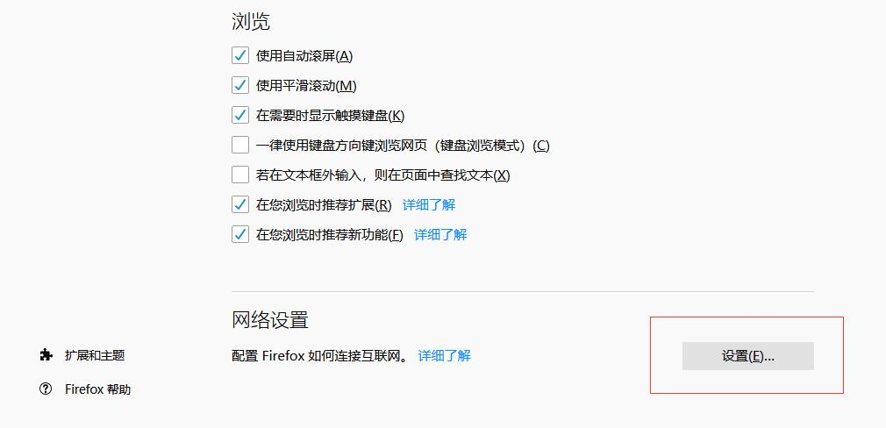
三、然后选择“手动代理配置”，然后在HTTP 代理（x）后面填写 代理 ip 地址，端口后面填写 代理 端口号，然后根据需求 选择“为所有协议使用相同代理服务器（s）”, 根据需要选择 SOCKS v4 或者SOCKS v5；
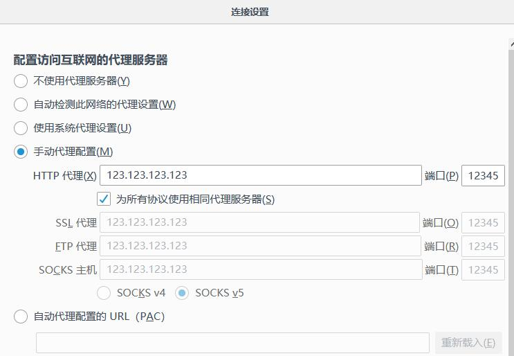
四、然后点击“确定”就配置好了代理。
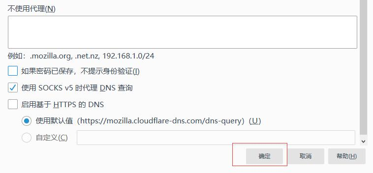
以上就是两种浏览器上使用socks5代理IP的方法，遗憾的是，两种浏览器都不支持使用账号密码授权的socks5代理IP。
最佳Socks5静态住宅代理IP提供商介绍
使用Socks5静态住宅代理可以增加网络匿名性，解除限制访问，加快网络访问速度，提高网络安全性等优势。下面介绍几家优秀的Socks5静态住宅代理IP提供商介绍：
| Proxy-seller
最便宜的Socks5静态住宅代理IP提供商 |
$2.91/月 1个起 - $2.91/月 / 100个起 - $2.45/月 |
去Proxy seller官网 |
| IPRoyal
最稳定可靠的Socks5静态住宅代理IP提供商 |
$3.00/月 1个起 - $3.00/月 / 100个起 - $2.68/月 |
去IPRoyal官网 |
| Youproxy
使用 PREVIEWS 立项立享15%折扣 |
$0.79/月 10个起 - $0.79/月 / 100个起 - $6.39/月 |
去Youproxy官网 |
| HypeProxy.io
速度超快的Socks5静态住宅代理IP提供商 |
$4.20/月 1个起 - $4.20/月 / 100个起 - $4.00/月 |
去HypeProxy官网 |
| Proxysale
土豪款的Socks5静态住宅代理IP提供商 |
$4.5/月 1个起 - $4.50/月 / 100个起 - $4.20/月 |
去Proxy Cheap官网 |
| Proxy Cheap
安全性极高的Socks5静态住宅代理IP提供商 |
$3.49/月 1个起 - $3.49/月 / 100个起 - $3.20/月 |
去Shifter官网 |
| Shifter
极品社交媒体Socks5静态住宅代理IP提供商 |
$3.00/月 25个起 - $3.00/月 / 100个起 - $2.85/月 |
去Netnut官网 |
| NetNut proxies
土豪型的Socks5静态住宅代理IP提供商 |
$2.99/月 10个起 - $2.99/月 / 100个起 - $2.58/月 |
去IPRoyal官网 |
使用Socks5静态住宅代理IP有什么好处？
结合Socks5静态住宅代理之后，在本地浏览器中会获得以下几个优势：
提高隐私保护：使用静态住宅代理可以隐藏用户的真实IP地址，从而提高隐私保护，避免个人信息被追踪和泄露。
突破限制访问：Socks5静态住宅代理可以帮助用户突破地区性的限制访问，访问部分受限网站和服务，例如在某些国家无法访问的社交媒体等。
加速网络访问：有时候用户可能遇到一些地理位置偏远或网络特别拥挤的服务器，这会导致访问速度很慢。使用Socks5静态住宅代理可以帮助用户加速网络访问，尤其是一些视频、图片等需要大流量的网页，使用代理服务器缓存能够节省客户端到服务器之间的连接时间。
防范黑客攻击：不良分子可能通过多种渠道获取用户IP地址，甚至进行网络攻击和入侵。使用静态住宅代理可以有效防范这些攻击行为，增强网络安全性。
总的来说，使用Socks5静态住宅代理可以增加网络匿名性，解除限制访问，加快网络访问速度，提高网络安全性等优势。